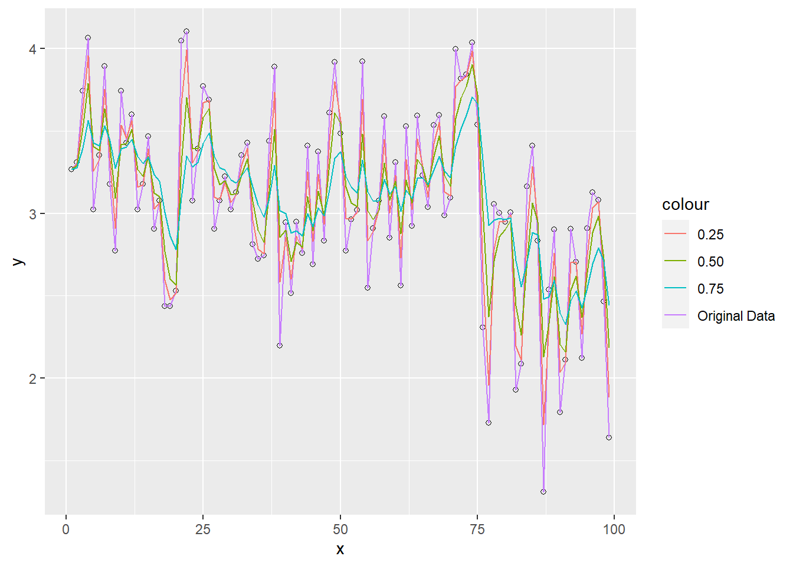
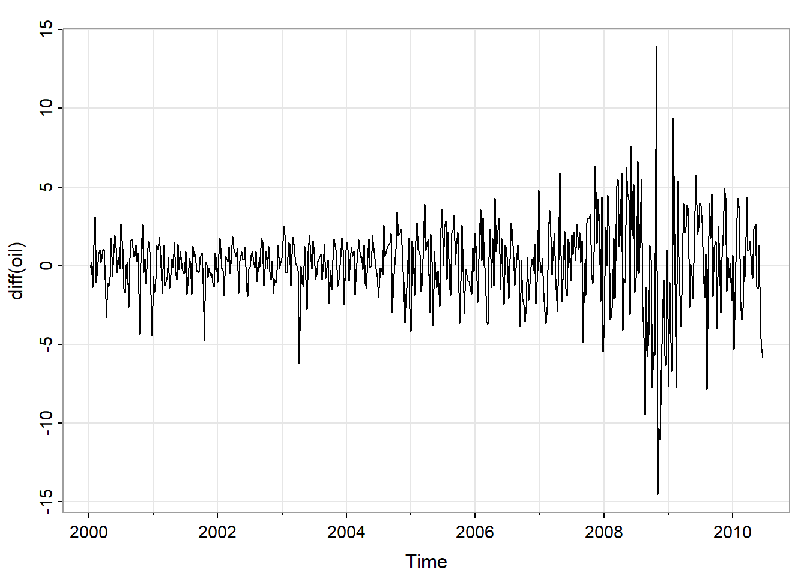
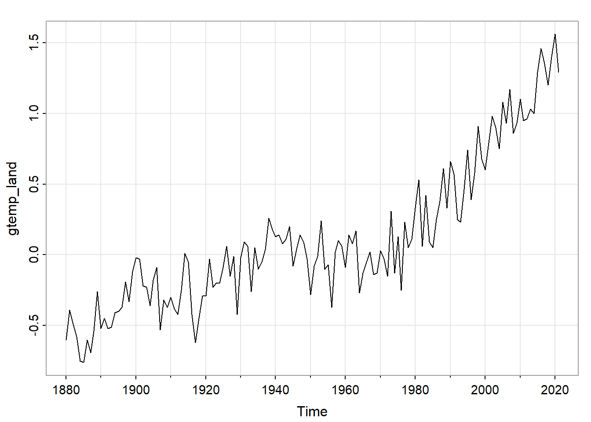

Chapter 5 第五章作业
5.1 5.1
x <- log(varve[1:100])
x25 <- HoltWinters(x, alpha = 0.75, beta = FALSE, gamma = FALSE)
x50 <- HoltWinters(x, alpha = 0.50, beta = FALSE, gamma = FALSE)
x75 <- HoltWinters(x, alpha = 0.25, beta = FALSE, gamma = FALSE)
x25_fit <- x25$fit[, 1]
x50_fit <- x50$fit[, 1]
x75_fit <- x75$fit[, 1]
df <- data.frame(
x = seq_along(x)[1:length(x)-1],
y = x[1:length(x)-1],
x25 = x25_fit,
x50 = x50_fit,
x75 = x75_fit
)
ggplot(df, aes(x = x, y = y)) +
geom_point(color = "black", shape = 1) +
geom_line(aes(y = y), color = "darkgray" )+
geom_line(aes(y = x25, color = "0.25"), linetype = "solid") +
geom_line(aes(y = x50, color = "0.50"), linetype = "solid") +
geom_line(aes(y = x75, color = "0.75"), linetype = "solid") +
labs(ylab = "log(varve)") 
5.2 5.2

## [,1] [,2] [,3] [,4] [,5] [,6] [,7] [,8] [,9] [,10] [,11] [,12] [,13]
## ACF 0.99 0.98 0.97 0.96 0.95 0.94 0.93 0.92 0.91 0.90 0.89 0.88 0.87
## PACF 0.99 0.00 0.00 -0.01 0.00 0.00 0.00 -0.01 -0.01 -0.01 -0.01 -0.01 -0.01
## [,14] [,15] [,16] [,17] [,18] [,19] [,20] [,21] [,22] [,23] [,24] [,25]
## ACF 0.86 0.85 0.84 0.83 0.82 0.81 0.80 0.79 0.78 0.77 0.76 0.75
## PACF -0.01 0.00 0.00 -0.01 0.00 0.00 -0.02 0.00 0.00 -0.01 0.00 -0.01
## [,26] [,27]
## ACF 0.74 0.73
## PACF -0.01 -0.01dev.new()
tsplot(diff(log(gdp)), ylab="GNP Growth Rate", col=4)
abline(h = mean(diff(log(gdp))), col=6)## [,1] [,2] [,3] [,4] [,5] [,6] [,7] [,8] [,9] [,10] [,11] [,12] [,13]
## ACF 0.36 0.23 0.02 -0.06 -0.13 -0.03 -0.04 -0.01 0.08 0.10 0.02 -0.11 -0.11
## PACF 0.36 0.11 -0.11 -0.07 -0.08 0.07 -0.02 -0.02 0.10 0.04 -0.07 -0.16 -0.02
## [,14] [,15] [,16] [,17] [,18] [,19] [,20] [,21] [,22] [,23] [,24] [,25]
## ACF -0.05 -0.08 0.05 0.05 0.11 0.07 0.07 -0.07 -0.05 -0.09 -0.02 0.03
## PACF 0.08 -0.06 0.08 0.01 0.06 -0.02 -0.01 -0.07 0.03 -0.04 0.03 0.05
## [,26] [,27]
## ACF 0.03 0.06
## PACF -0.04 0.03## initial value -4.672826
## iter 2 value -4.735845
## iter 3 value -4.756484
## iter 4 value -4.756533
## iter 5 value -4.756533
## iter 6 value -4.756533
## iter 6 value -4.756533
## iter 6 value -4.756533
## final value -4.756533
## converged
## initial value -4.754958
## iter 2 value -4.754969
## iter 3 value -4.754970
## iter 4 value -4.754973
## iter 5 value -4.754973
## iter 5 value -4.754973
## iter 5 value -4.754973
## final value -4.754973
## converged
## $fit
##
## Call:
## arima(x = xdata, order = c(p, d, q), seasonal = list(order = c(P, D, Q), period = S),
## xreg = xmean, include.mean = FALSE, transform.pars = trans, fixed = fixed,
## optim.control = list(trace = trc, REPORT = 1, reltol = tol))
##
## Coefficients:
## ar1 ar2 ar3 xmean
## 0.3331 0.1489 -0.1122 0.0077
## s.e. 0.0587 0.0613 0.0588 0.0008
##
## sigma^2 estimated as 7.406e-05: log likelihood = 954.11, aic = -1898.21
##
## $degrees_of_freedom
## [1] 282
##
## $ttable
## Estimate SE t.value p.value
## ar1 0.3331 0.0587 5.6759 0.0000
## ar2 0.1489 0.0613 2.4283 0.0158
## ar3 -0.1122 0.0588 -1.9069 0.0575
## xmean 0.0077 0.0008 9.5617 0.0000
##
## $AIC
## [1] -6.637105
##
## $AICc
## [1] -6.636607
##
## $BIC
## [1] -6.573189## initial value -4.672758
## iter 2 value -4.716609
## iter 3 value -4.723220
## iter 4 value -4.723481
## iter 5 value -4.723483
## iter 5 value -4.723483
## iter 5 value -4.723483
## final value -4.723483
## converged
## initial value -4.723444
## iter 1 value -4.723444
## final value -4.723444
## converged
## $fit
##
## Call:
## arima(x = xdata, order = c(p, d, q), seasonal = list(order = c(P, D, Q), period = S),
## xreg = xmean, include.mean = FALSE, transform.pars = trans, fixed = fixed,
## optim.control = list(trace = trc, REPORT = 1, reltol = tol))
##
## Coefficients:
## ma1 xmean
## 0.2687 0.0077
## s.e. 0.0470 0.0007
##
## sigma^2 estimated as 7.891e-05: log likelihood = 945.09, aic = -1884.18
##
## $degrees_of_freedom
## [1] 284
##
## $ttable
## Estimate SE t.value p.value
## ma1 0.2687 0.0470 5.7155 0
## xmean 0.0077 0.0007 11.5865 0
##
## $AIC
## [1] -6.588031
##
## $AICc
## [1] -6.587883
##
## $BIC
## [1] -6.549682## [1] 0.330 0.109 0.036 0.012 0.004 0.001 0.000 0.000 0.000 0.000从Ljung-Box统计量的检验结果来看，AR(3)模型也具有较好的残差性质。
从AIC，AICc，BIC的角度看（越小越好），因此更加倾向于AR(3)模型。
因此，综合考虑起来，对于差分后的数据选择模型AR(3)，那么对于原始数据，选择的模型为ARIMA(3,1,0)。
5.3 5.3
## Series: oil
## ARIMA(1,1,3)(0,0,1)[52]
##
## Coefficients:
## ar1 ma1 ma2 ma3 sma1
## 0.8793 -0.725 -0.1178 0.066 -0.0738
## s.e. 0.0539 0.069 0.0552 0.044 0.0436
##
## sigma^2 = 6.396: log likelihood = -1274.33
## AIC=2560.66 AICc=2560.82 BIC=2586.46
## [,1] [,2] [,3] [,4] [,5] [,6] [,7] [,8] [,9] [,10] [,11] [,12]
## ACF 0.99 0.99 0.98 0.97 0.95 0.94 0.93 0.92 0.90 0.89 0.87 0.86
## PACF 0.99 -0.17 -0.04 -0.10 0.00 -0.04 -0.03 -0.01 -0.14 -0.03 -0.04 -0.02
## [,13] [,14] [,15] [,16] [,17] [,18] [,19] [,20] [,21] [,22] [,23] [,24]
## ACF 0.84 0.82 0.81 0.79 0.77 0.76 0.74 0.72 0.71 0.69 0.68 0.66
## PACF -0.01 0.05 -0.05 0.00 0.06 -0.04 -0.04 0.02 0.09 0.05 -0.04 0.04
## [,25] [,26] [,27] [,28] [,29] [,30] [,31] [,32] [,33] [,34] [,35] [,36]
## ACF 0.65 0.64 0.63 0.61 0.61 0.59 0.59 0.58 0.57 0.56 0.55 0.55
## PACF 0.00 0.10 -0.02 0.11 -0.02 -0.06 0.00 0.03 0.04 0.00 -0.02 0.06
## [,37] [,38] [,39] [,40] [,41] [,42] [,43] [,44] [,45] [,46] [,47] [,48]
## ACF 0.54 0.54 0.53 0.53 0.52 0.52 0.51 0.51 0.51 0.50 0.50 0.50
## PACF -0.03 0.01 -0.04 -0.01 0.02 0.04 0.05 -0.01 -0.03 -0.06 -0.02 -0.01
## [,49] [,50] [,51] [,52] [,53] [,54] [,55] [,56] [,57] [,58] [,59] [,60]
## ACF 0.49 0.49 0.48 0.48 0.48 0.47 0.47 0.47 0.47 0.47 0.47 0.47
## PACF 0.00 0.00 0.01 0.04 0.09 0.02 0.04 0.00 0.02 0.11 0.00 0.05
## [,61] [,62] [,63] [,64] [,65] [,66] [,67] [,68] [,69] [,70] [,71] [,72]
## ACF 0.47 0.47 0.47 0.47 0.47 0.48 0.48 0.48 0.48 0.48 0.49 0.49
## PACF -0.04 0.05 -0.03 0.03 0.01 0.01 -0.08 -0.04 0.04 0.06 0.01 -0.06
## [,73] [,74] [,75] [,76] [,77] [,78] [,79] [,80] [,81] [,82] [,83] [,84]
## ACF 0.49 0.50 0.50 0.50 0.51 0.51 0.51 0.51 0.51 0.51 0.52 0.52
## PACF 0.06 0.04 -0.01 -0.02 0.02 0.00 -0.03 -0.05 -0.01 0.02 0.02 -0.07
## [,85] [,86] [,87] [,88] [,89] [,90] [,91] [,92] [,93] [,94] [,95] [,96]
## ACF 0.52 0.52 0.51 0.51 0.51 0.51 0.51 0.51 0.5 0.50 0.49 0.49
## PACF 0.02 0.01 -0.06 0.02 0.03 0.03 -0.02 0.03 0.0 -0.08 0.03 -0.03
## [,97] [,98] [,99] [,100] [,101] [,102] [,103] [,104] [,105] [,106] [,107]
## ACF 0.48 0.48 0.47 0.46 0.46 0.45 0.44 0.44 0.43 0.42 0.41
## PACF -0.05 0.01 -0.03 -0.02 -0.03 0.03 0.02 0.01 -0.03 0.02 0.01
## [,108] [,109] [,110] [,111] [,112] [,113] [,114] [,115] [,116] [,117]
## ACF 0.41 0.40 0.39 0.38 0.38 0.37 0.36 0.35 0.34 0.33
## PACF 0.01 -0.05 -0.04 -0.01 -0.02 -0.03 -0.02 -0.03 0.04 0.01
## [,118] [,119] [,120] [,121] [,122] [,123] [,124] [,125] [,126] [,127]
## ACF 0.32 0.31 0.31 0.30 0.29 0.28 0.27 0.26 0.26 0.25
## PACF 0.00 0.01 -0.02 -0.05 -0.03 0.02 -0.02 0.00 0.05 0.01
## [,128] [,129] [,130] [,131] [,132] [,133] [,134] [,135] [,136] [,137]
## ACF 0.24 0.24 0.23 0.22 0.21 0.20 0.20 0.19 0.18 0.18
## PACF -0.04 -0.01 -0.04 -0.04 0.05 -0.01 0.01 -0.02 -0.01 0.01
## [,138] [,139] [,140] [,141] [,142] [,143] [,144] [,145] [,146] [,147]
## ACF 0.17 0.17 0.16 0.16 0.15 0.15 0.14 0.14 0.14 0.13
## PACF 0.04 -0.03 -0.01 -0.01 -0.01 -0.03 -0.01 -0.01 -0.03 0.00
## [,148] [,149] [,150] [,151] [,152] [,153] [,154] [,155] [,156] [,157]
## ACF 0.13 0.12 0.12 0.11 0.11 0.10 0.10 0.09 0.09 0.08
## PACF -0.03 -0.02 -0.02 -0.02 -0.03 -0.02 -0.03 -0.04 0.01 -0.01
## [,158] [,159] [,160] [,161] [,162] [,163] [,164] [,165] [,166] [,167]
## ACF 0.08 0.08 0.07 0.07 0.06 0.06 0.05 0.05 0.04 0.04
## PACF 0.01 0.06 -0.01 -0.03 0.01 -0.02 -0.01 0.03 -0.02 0.00
## [,168] [,169] [,170] [,171] [,172] [,173] [,174] [,175] [,176] [,177]
## ACF 0.03 0.03 0.02 0.02 0.01 0.01 0.01 0 0 0.00
## PACF 0.01 0.00 -0.02 -0.02 0.01 -0.01 -0.01 0 0 -0.03
## [,178] [,179] [,180] [,181] [,182] [,183] [,184] [,185] [,186] [,187]
## ACF -0.01 -0.01 -0.02 -0.02 -0.02 -0.03 -0.03 -0.03 -0.04 -0.04
## PACF -0.03 0.00 0.04 -0.01 -0.01 -0.05 0.01 -0.02 -0.01 0.01
## [,188] [,189] [,190] [,191] [,192] [,193] [,194] [,195] [,196] [,197]
## ACF -0.04 -0.05 -0.05 -0.05 -0.06 -0.06 -0.07 -0.07 -0.07 -0.08
## PACF -0.02 0.01 0.03 0.03 -0.02 -0.02 -0.03 -0.01 -0.01 -0.06
## [,198] [,199] [,200] [,201] [,202] [,203] [,204] [,205] [,206] [,207]
## ACF -0.08 -0.09 -0.09 -0.10 -0.10 -0.11 -0.11 -0.12 -0.12 -0.13
## PACF 0.00 0.02 0.01 0.01 -0.02 -0.02 0.03 0.03 -0.04 -0.03
## [,208]
## ACF -0.13
## PACF -0.01## initial value 3.253470
## iter 2 value 2.397818
## iter 3 value 2.377181
## iter 4 value 2.002749
## iter 5 value 1.893578
## iter 6 value 1.886120
## iter 7 value 1.885091
## iter 8 value 1.882875
## iter 9 value 1.881364
## iter 10 value 1.880891
## iter 11 value 1.871508
## iter 12 value 1.868136
## iter 13 value 1.867923
## iter 14 value 1.867667
## iter 15 value 1.867605
## iter 16 value 1.867504
## iter 17 value 1.867486
## iter 18 value 1.867482
## iter 19 value 1.867482
## iter 19 value 1.867482
## final value 1.867482
## converged
## initial value 1.839929
## iter 2 value 1.838516
## iter 3 value 1.837368
## iter 4 value 1.835647
## iter 5 value 1.835029
## iter 6 value 1.833975
## iter 7 value 1.833785
## iter 8 value 1.833762
## iter 9 value 1.833761
## iter 9 value 1.833761
## iter 9 value 1.833761
## final value 1.833761
## converged
## $fit
##
## Call:
## arima(x = xdata, order = c(p, d, q), seasonal = list(order = c(P, D, Q), period = S),
## xreg = xmean, include.mean = FALSE, transform.pars = trans, fixed = fixed,
## optim.control = list(trace = trc, REPORT = 1, reltol = tol))
##
## Coefficients:
## ma1 ma2 ma3 xmean
## 1.6231 1.5291 0.7605 52.0373
## s.e. 0.0259 0.0298 0.0224 1.3080
##
## sigma^2 estimated as 38.84: log likelihood = -1772.72, aic = 3555.44
##
## $degrees_of_freedom
## [1] 541
##
## $ttable
## Estimate SE t.value p.value
## ma1 1.6231 0.0259 62.7615 0
## ma2 1.5291 0.0298 51.2346 0
## ma3 0.7605 0.0224 33.9465 0
## xmean 52.0373 1.3080 39.7833 0
##
## $AIC
## [1] 6.523747
##
## $AICc
## [1] 6.523883
##
## $BIC
## [1] 6.5632045.4 5.4
## Time Series:
## Start = 1880
## End = 2021
## Frequency = 1
## [1] -0.60 -0.39 -0.49 -0.58 -0.75 -0.76 -0.60 -0.69 -0.54 -0.26 -0.52 -0.45
## [13] -0.52 -0.51 -0.41 -0.40 -0.37 -0.19 -0.33 -0.12 -0.02 -0.03 -0.22 -0.23
## [25] -0.36 -0.18 -0.09 -0.53 -0.32 -0.37 -0.30 -0.38 -0.42 -0.25 0.01 -0.05
## [37] -0.42 -0.62 -0.45 -0.29 -0.29 -0.03 -0.23 -0.20 -0.20 -0.09 0.06 -0.15
## [49] -0.01 -0.42 -0.02 0.09 0.06 -0.26 0.05 -0.10 -0.05 0.04 0.26 0.18
## [61] 0.13 0.14 0.08 0.11 0.20 -0.08 0.04 0.14 0.09 -0.03 -0.28 -0.08
## [73] -0.01 0.24 -0.10 -0.07 -0.37 0.02 0.10 0.06 -0.09 0.14 0.08 0.17
## [85] -0.27 -0.13 -0.05 0.02 -0.14 -0.13 0.03 -0.03 -0.15 0.31 -0.13 0.13
## [97] -0.25 0.23 0.05 0.11 0.33 0.53 0.06 0.42 0.09 0.05 0.25 0.38
## [109] 0.61 0.33 0.66 0.57 0.25 0.23 0.46 0.74 0.39 0.58 0.91 0.68
## [121] 0.60 0.79 0.98 0.90 0.75 1.08 0.93 1.17 0.86 0.93 1.10 0.95
## [133] 0.96 1.03 1.00 1.29 1.46 1.35 1.20 1.40 1.56 1.29## Series: gtemp_land
## ARIMA(0,1,1) with drift
##
## Coefficients:
## ma1 drift
## -0.7023 0.0139
## s.e. 0.0601 0.0044
##
## sigma^2 = 0.03049: log likelihood = 46.68
## AIC=-87.35 AICc=-87.18 BIC=-78.51

## [,1] [,2] [,3] [,4] [,5] [,6] [,7] [,8] [,9] [,10] [,11] [,12]
## ACF -0.41 -0.01 -0.17 0.18 -0.08 -0.01 -0.02 0.13 -0.16 0.17 -0.09 0.02
## PACF -0.41 -0.22 -0.33 -0.08 -0.11 -0.13 -0.10 0.05 -0.13 0.11 0.05 -0.01
## [,13] [,14] [,15] [,16] [,17] [,18] [,19] [,20] [,21] [,22]
## ACF -0.05 0.03 0.06 -0.10 0.04 0.08 -0.14 0.12 -0.08 0.15
## PACF 0.03 -0.02 0.07 -0.05 0.01 0.09 -0.10 0.07 0.00 0.13## initial value -1.579037
## iter 2 value -1.707300
## iter 3 value -1.730190
## iter 4 value -1.744969
## iter 5 value -1.749548
## iter 6 value -1.751354
## iter 7 value -1.751897
## iter 8 value -1.752066
## iter 9 value -1.752339
## iter 10 value -1.752344
## iter 11 value -1.752344
## iter 11 value -1.752344
## final value -1.752344
## converged
## initial value -1.749940
## iter 2 value -1.749961
## iter 3 value -1.749966
## iter 4 value -1.749973
## iter 4 value -1.749973
## iter 4 value -1.749973
## final value -1.749973
## converged
## $fit
##
## Call:
## arima(x = xdata, order = c(p, d, q), seasonal = list(order = c(P, D, Q), period = S),
## xreg = constant, transform.pars = trans, fixed = fixed, optim.control = list(trace = trc,
## REPORT = 1, reltol = tol))
##
## Coefficients:
## ma1 constant
## -0.7023 0.0139
## s.e. 0.0601 0.0044
##
## sigma^2 estimated as 0.03005: log likelihood = 46.68, aic = -87.35
##
## $degrees_of_freedom
## [1] 139
##
## $ttable
## Estimate SE t.value p.value
## ma1 -0.7023 0.0601 -11.6793 0.0000
## constant 0.0139 0.0044 3.1382 0.0021
##
## $AIC
## [1] -0.6195152
##
## $AICc
## [1] -0.6188985
##
## $BIC
## [1] -0.55677565.5 5.5
## Time Series:
## Start = 1880
## End = 2021
## Frequency = 1
## [1] -0.05 0.01 0.00 -0.06 -0.15 -0.21 -0.21 -0.24 -0.05 -0.04 -0.29 -0.13
## [13] -0.18 -0.23 -0.26 -0.14 0.00 -0.05 -0.23 -0.16 -0.07 -0.18 -0.26 -0.41
## [25] -0.51 -0.28 -0.26 -0.32 -0.47 -0.52 -0.49 -0.47 -0.31 -0.37 -0.21 -0.14
## [37] -0.33 -0.38 -0.22 -0.27 -0.26 -0.24 -0.30 -0.30 -0.30 -0.26 -0.17 -0.23
## [49] -0.28 -0.33 -0.19 -0.16 -0.24 -0.29 -0.22 -0.23 -0.19 -0.09 -0.17 -0.09
## [61] 0.11 0.25 0.05 0.03 0.21 0.19 -0.10 -0.13 -0.17 -0.13 -0.14 -0.05
## [73] 0.02 0.01 -0.17 -0.19 -0.14 0.05 0.07 0.01 0.00 0.03 0.02 0.03
## [85] -0.13 -0.09 -0.04 -0.06 -0.04 0.14 0.02 -0.12 0.08 0.10 -0.07 -0.09
## [97] -0.03 0.14 0.08 0.21 0.23 0.18 0.19 0.26 0.16 0.12 0.16 0.32
## [109] 0.27 0.22 0.33 0.29 0.22 0.22 0.24 0.28 0.24 0.39 0.44 0.23
## [121] 0.25 0.38 0.42 0.44 0.43 0.43 0.43 0.34 0.33 0.47 0.47 0.35
## [133] 0.42 0.46 0.55 0.68 0.70 0.64 0.60 0.68 0.67 0.56## Series: gtemp_ocean
## ARIMA(1,1,3)
##
## Coefficients:
## ar1 ma1 ma2 ma3
## -0.9258 0.9190 -0.5010 -0.5120
## s.e. 0.0554 0.0912 0.0906 0.0803
##
## sigma^2 = 0.007738: log likelihood = 144.29
## AIC=-278.59 AICc=-278.14 BIC=-263.84
## [,1] [,2] [,3] [,4] [,5] [,6] [,7] [,8] [,9] [,10] [,11] [,12]
## ACF -0.04 -0.44 0.01 0.14 -0.06 -0.07 0.03 0.05 -0.11 0.05 0.04 -0.07
## PACF -0.04 -0.44 -0.03 -0.07 -0.09 -0.05 -0.04 0.01 -0.14 0.07 -0.07 -0.03
## [,13] [,14] [,15] [,16] [,17] [,18] [,19] [,20] [,21] [,22]
## ACF -0.06 0.09 -0.03 -0.05 -0.03 0.18 0.06 -0.12 0.05 0.03
## PACF -0.07 0.03 -0.10 -0.01 -0.10 0.16 0.05 0.03 0.13 -0.03## initial value -1.578713
## iter 2 value -1.703207
## iter 3 value -1.717012
## iter 4 value -1.735429
## iter 5 value -1.746726
## iter 6 value -1.751436
## iter 7 value -1.751677
## iter 8 value -1.752187
## iter 9 value -1.753434
## iter 10 value -1.757103
## iter 11 value -1.757729
## iter 12 value -1.758429
## iter 13 value -1.758949
## iter 14 value -1.759725
## iter 15 value -1.759875
## iter 16 value -1.759939
## iter 17 value -1.760158
## iter 18 value -1.760161
## iter 19 value -1.760163
## iter 20 value -1.760168
## iter 21 value -1.760170
## iter 22 value -1.760171
## iter 23 value -1.760171
## iter 23 value -1.760171
## final value -1.760171
## converged
## initial value -1.763590
## iter 2 value -1.763605
## iter 3 value -1.763621
## iter 4 value -1.763647
## iter 5 value -1.763686
## iter 6 value -1.763755
## iter 7 value -1.763972
## iter 8 value -1.764121
## iter 9 value -1.764311
## iter 10 value -1.764348
## iter 11 value -1.764350
## iter 12 value -1.764351
## iter 12 value -1.764351
## final value -1.764351
## converged
## $fit
##
## Call:
## arima(x = xdata, order = c(p, d, q), seasonal = list(order = c(P, D, Q), period = S),
## xreg = constant, transform.pars = trans, fixed = fixed, optim.control = list(trace = trc,
## REPORT = 1, reltol = tol))
##
## Coefficients:
## ar1 ma1 ma2 ma3 constant
## -0.9176 0.3081 -0.6233 -0.1471 0.0138
## s.e. 0.1037 0.1293 0.1012 0.0827 0.0041
##
## sigma^2 estimated as 0.02919: log likelihood = 48.7, aic = -85.41
##
## $degrees_of_freedom
## [1] 136
##
## $ttable
## Estimate SE t.value p.value
## ar1 -0.9176 0.1037 -8.8486 0.0000
## ma1 0.3081 0.1293 2.3823 0.0186
## ma2 -0.6233 0.1012 -6.1578 0.0000
## ma3 -0.1471 0.0827 -1.7787 0.0775
## constant 0.0138 0.0041 3.3451 0.0011
##
## $AIC
## [1] -0.6057187
##
## $AICc
## [1] -0.6025666
##
## $BIC
## [1] -0.48023955.6 5.6
## Time Series:
## Start = c(1970, 1)
## End = c(1979, 40)
## Frequency = 52
## [1] 3.37 2.59 3.29 3.04 3.39 2.57 2.35 3.38 1.50 2.56 3.04 2.64 5.14 2.87 3.54
## [16] 2.67 1.55 2.93 3.64 5.91 3.69 4.30 3.97 4.98 5.64 3.99 4.20 4.48 3.96 3.65
## [31] 4.91 4.26 4.02 2.95 3.73 2.02 4.98 3.05 3.73 3.53 2.24 3.03 2.81 2.00 2.27
## [46] 2.90 3.31 3.44 3.13 4.42 3.60 4.86 1.79 2.95 3.64 2.79 3.77 3.25 4.78 3.37
## [61] 2.24 2.00 2.78 2.38 3.27 2.82 2.23 1.95 2.57 4.94 3.45 2.83 4.75 3.49 3.84
## [76] 4.08 6.49 4.05 3.12 4.83 3.35 6.53 3.10 3.53 2.34 6.57 4.07 3.62 1.92 6.04
## [91] 3.92 3.11 3.77 3.05 2.84 4.19 1.93 3.36 5.92 5.49 4.97 2.53 3.98 3.15 5.44
## [106] 4.92 4.90 4.82 4.48 3.89 3.75 4.02 2.78 2.64 4.97 2.46 4.57 1.97 2.49 3.49
## [121] 2.53 3.32 2.26 4.78 5.33 3.46 2.85 5.08 3.65 2.86 2.75 3.05 3.15 2.44 3.87
## [136] 2.59 3.72 2.67 1.98 4.30 2.95 3.96 2.82 2.66 3.22 3.60 1.92 3.05 3.32 3.42
## [151] 2.24 3.51 1.93 2.97 2.02 2.20 2.73 2.14 2.11 1.79 2.43 2.08 2.25 2.16 3.28
## [166] 2.22 3.06 2.41 3.41 2.43 3.76 2.48 4.27 1.70 4.72 4.93 4.57 3.20 4.24 4.73
## [181] 4.10 3.75 5.91 3.85 2.78 2.60 3.23 4.05 3.95 3.46 4.43 3.85 4.01 2.93 5.65
## [196] 1.86 2.92 3.44 3.30 3.64 3.10 2.25 1.10 2.39 2.76 3.26 3.26 2.79 3.20 2.15
## [211] 2.71 2.00 3.70 1.51 2.24 1.94 2.30 2.49 2.48 2.20 2.26 1.85 2.76 2.26 2.57
## [226] 2.55 4.26 3.84 1.79 2.55 3.02 2.53 2.49 1.86 2.22 2.90 3.39 3.83 2.70 4.59
## [241] 2.49 2.33 2.46 3.90 1.97 2.44 2.47 3.75 3.46 4.54 2.89 3.68 4.21 1.81 3.18
## [256] 2.76 4.66 4.65 1.85 3.22 2.80 2.43 6.06 1.85 2.16 2.70 2.05 2.00 1.50 2.72
## [271] 2.19 2.51 3.09 2.15 2.45 2.68 2.28 2.35 1.73 3.27 2.39 3.43 1.88 3.34 2.76
## [286] 4.28 2.41 2.88 3.06 4.01 2.23 3.52 3.13 3.86 1.72 2.76 1.77 3.88 3.65 3.64
## [301] 3.18 2.30 4.12 2.75 4.60 3.13 2.48 3.62 3.50 2.76 4.33 1.20 1.90 1.74 2.81
## [316] 1.40 2.91 3.77 1.86 1.78 1.39 1.51 1.52 2.89 1.54 3.55 1.19 1.74 1.57 1.63
## [331] 2.29 3.61 2.35 3.10 1.27 3.02 1.95 2.16 2.04 1.69 3.61 2.85 1.68 1.73 1.56
## [346] 1.49 2.92 2.43 1.45 2.75 3.00 2.51 3.60 2.78 3.00 3.13 2.91 2.72 2.42 1.67
## [361] 2.81 3.52 2.63 3.33 3.73 4.07 1.07 1.85 2.12 2.03 1.60 1.69 2.77 2.43 3.78
## [376] 2.33 1.46 1.26 2.43 1.92 4.19 1.69 2.21 3.24 2.75 3.03 3.18 3.13 3.56 2.78
## [391] 3.27 2.76 2.27 2.18 3.48 1.36 2.29 2.35 2.92 3.24 2.24 2.94 1.91 3.14 2.94
## [406] 2.19 4.51 4.16 2.87 1.12 1.67 1.29 1.54 1.76 3.03 2.29 1.17 1.75 2.36 1.12
## [421] 1.86 2.00 2.22 1.84 2.09 1.91 2.51 2.09 2.10 3.28 2.53 2.38 1.79 2.69 2.21
## [436] 2.64 1.85 2.07 3.34 2.83 2.43 2.44 1.42 2.47 2.09 2.99 1.58 1.52 1.78 3.19
## [451] 1.76 3.22 1.66 2.26 2.43 1.86 2.39 1.25 2.53 1.74 2.36 3.13 2.39 1.89 1.59
## [466] 1.42 1.65 1.12 4.03 1.53 1.41 1.48 2.31 1.24 1.38 1.33 1.42 1.56 1.93 1.51
## [481] 1.16 1.39 1.62 1.29 0.86 1.59 1.90 1.60 2.01 1.79 1.90 2.08 2.28 2.23 2.31
## [496] 1.50 2.31 1.65 2.55 2.83 2.05 1.57 2.28 1.72 1.49 1.89 1.63 1.58
## [,1] [,2] [,3] [,4] [,5] [,6] [,7] [,8] [,9] [,10] [,11] [,12]
## ACF -0.54 0.13 -0.15 0.09 -0.02 0.00 -0.03 0.05 -0.05 0.09 -0.11 0.03
## PACF -0.54 -0.24 -0.28 -0.19 -0.12 -0.11 -0.12 -0.04 -0.07 0.05 -0.01 -0.06
## [,13] [,14] [,15] [,16] [,17] [,18] [,19] [,20] [,21] [,22] [,23] [,24]
## ACF 0.05 -0.07 0.06 -0.08 0.08 -0.05 0.07 -0.06 0.04 -0.11 0.14 -0.11
## PACF 0.05 -0.04 -0.01 -0.09 -0.06 -0.08 0.00 -0.03 0.01 -0.13 -0.03 -0.06
## [,25] [,26] [,27] [,28] [,29] [,30] [,31] [,32] [,33] [,34] [,35] [,36]
## ACF 0.10 -0.07 0.06 -0.05 -0.01 0.04 -0.03 -0.01 0.02 -0.01 0.03 0.00
## PACF -0.02 -0.01 0.02 0.01 -0.05 0.02 0.00 -0.03 -0.02 -0.02 0.01 0.03
## [,37] [,38] [,39] [,40] [,41] [,42] [,43] [,44] [,45] [,46] [,47] [,48]
## ACF -0.06 0.08 -0.08 0.11 -0.17 0.14 -0.05 -0.01 0.03 -0.06 0.03 0.02
## PACF -0.07 -0.02 -0.06 0.02 -0.11 -0.06 -0.02 -0.10 -0.01 -0.09 -0.07 -0.04
## [,49] [,50] [,51] [,52] [,53] [,54] [,55] [,56] [,57] [,58] [,59] [,60]
## ACF -0.03 0.01 0.04 -0.04 0.02 -0.07 0.13 -0.08 -0.02 0.10 -0.09 0.03
## PACF -0.04 -0.08 0.04 0.00 0.00 -0.06 0.04 0.06 -0.09 0.09 0.00 -0.02
## [,61] [,62] [,63] [,64] [,65] [,66] [,67] [,68] [,69] [,70] [,71] [,72]
## ACF -0.01 -0.01 0.04 -0.08 0.04 0.02 -0.02 0.03 -0.01 -0.03 0.07 -0.09
## PACF -0.02 -0.02 -0.01 -0.05 -0.10 -0.03 -0.02 -0.05 0.04 -0.06 0.08 -0.01
## [,73] [,74] [,75] [,76] [,77] [,78] [,79] [,80] [,81] [,82] [,83] [,84]
## ACF 0.05 -0.05 0.06 -0.01 -0.02 0.05 -0.11 0.08 0.01 -0.06 0.08 -0.08
## PACF 0.00 -0.05 -0.02 0.01 0.01 0.05 -0.07 -0.02 0.01 -0.07 0.03 -0.02
## [,85] [,86] [,87] [,88] [,89] [,90] [,91] [,92] [,93] [,94] [,95] [,96]
## ACF 0.08 -0.07 0.05 -0.02 -0.02 0.05 -0.03 -0.01 0.03 -0.02 0.03 -0.03
## PACF -0.02 -0.04 0.00 -0.02 -0.05 -0.01 -0.01 -0.01 -0.01 -0.01 0.02 0.01
## [,97] [,98] [,99] [,100] [,101] [,102] [,103] [,104] [,105] [,106] [,107]
## ACF -0.03 0.04 0.02 -0.02 0.01 -0.03 0.04 -0.04 0.04 -0.02 0.00
## PACF -0.04 -0.07 0.06 -0.06 -0.01 -0.03 -0.02 -0.03 0.01 0.00 0.03
## [,108] [,109] [,110] [,111] [,112] [,113] [,114] [,115] [,116] [,117]
## ACF -0.02 0.04 -0.05 0.05 -0.09 0.13 -0.09 0.05 -0.02 -0.03
## PACF -0.03 0.04 -0.01 -0.02 -0.02 0.00 0.00 0.04 0.03 -0.03
## [,118] [,119] [,120] [,121] [,122] [,123] [,124] [,125] [,126] [,127]
## ACF 0.10 -0.09 0.01 0.01 -0.03 0.06 -0.09 0.10 -0.06 0.00
## PACF 0.08 0.05 -0.02 0.04 -0.03 0.02 -0.07 0.04 -0.03 -0.02
## [,128] [,129] [,130] [,131] [,132] [,133] [,134] [,135] [,136] [,137]
## ACF 0.02 0.04 -0.08 0.04 0.01 0.00 -0.04 0.04 -0.01 0.00
## PACF -0.01 0.12 0.00 0.02 0.05 0.01 -0.04 -0.01 -0.04 -0.02
## [,138] [,139] [,140] [,141] [,142] [,143] [,144] [,145] [,146] [,147]
## ACF 0.06 -0.06 -0.06 0.10 -0.04 0.01 -0.02 0.00 0.04 -0.06
## PACF 0.03 0.03 -0.08 -0.02 0.01 -0.03 -0.01 -0.01 0.01 0.00
## [,148] [,149] [,150] [,151] [,152] [,153] [,154] [,155] [,156] [,157]
## ACF 0.03 -0.01 0.00 0.02 0.00 0.00 0.02 -0.06 0.05 -0.06
## PACF -0.05 -0.03 -0.02 -0.03 0.01 0.04 0.05 0.00 -0.08 -0.07
## [,158] [,159] [,160] [,161] [,162] [,163] [,164] [,165] [,166] [,167]
## ACF 0.14 -0.10 0.01 -0.01 0.00 0.00 0.02 -0.01 -0.06 0.06
## PACF 0.06 0.09 0.00 -0.01 -0.01 -0.02 0.05 0.06 -0.04 -0.02
## [,168] [,169] [,170] [,171] [,172] [,173] [,174] [,175] [,176] [,177]
## ACF 0.01 -0.03 0.01 0.04 -0.08 0.06 -0.08 0.08 -0.02 0.03
## PACF 0.01 -0.01 0.01 0.03 -0.02 0.02 -0.05 0.04 -0.05 0.00
## [,178] [,179] [,180] [,181] [,182] [,183] [,184] [,185] [,186] [,187]
## ACF -0.04 -0.02 0.02 0.04 -0.03 0.01 -0.01 -0.06 0.08 -0.03
## PACF 0.02 -0.03 -0.07 -0.02 0.06 0.02 0.01 -0.04 0.00 0.04
## [,188] [,189] [,190] [,191] [,192] [,193] [,194] [,195] [,196] [,197]
## ACF -0.03 0.03 0.00 -0.01 -0.03 0.04 0.05 -0.10 0.09 -0.11
## PACF -0.05 0.00 0.02 0.02 -0.07 -0.02 0.01 0.02 -0.01 -0.06
## [,198] [,199] [,200] [,201] [,202] [,203] [,204] [,205] [,206] [,207]
## ACF 0.10 -0.07 0.10 -0.08 0.03 -0.02 0.04 -0.08 0.07 -0.04
## PACF -0.03 -0.07 0.04 0.00 0.04 0.00 0.05 -0.03 0.00 -0.02
## [,208]
## ACF 0.04
## PACF -0.01## initial value 0.162245
## iter 2 value 0.021810
## iter 3 value -0.028277
## iter 4 value -0.098572
## iter 5 value -0.099166
## iter 6 value -0.110909
## iter 7 value -0.120755
## iter 8 value -0.124837
## iter 9 value -0.124959
## iter 10 value -0.125052
## iter 11 value -0.125129
## iter 12 value -0.125237
## iter 13 value -0.125495
## iter 14 value -0.125867
## iter 15 value -0.126036
## iter 16 value -0.126273
## iter 17 value -0.126333
## iter 18 value -0.126349
## iter 19 value -0.126373
## iter 20 value -0.126443
## iter 21 value -0.126595
## iter 22 value -0.126766
## iter 23 value -0.126833
## iter 24 value -0.126851
## iter 25 value -0.126853
## iter 26 value -0.126858
## iter 27 value -0.126871
## iter 28 value -0.126875
## iter 29 value -0.126878
## iter 30 value -0.126879
## iter 31 value -0.126884
## iter 32 value -0.126932
## iter 33 value -0.127033
## iter 34 value -0.127249
## iter 35 value -0.127426
## iter 36 value -0.127571
## iter 37 value -0.127579
## iter 38 value -0.127595
## iter 39 value -0.127606
## iter 40 value -0.127677
## iter 41 value -0.127680
## iter 42 value -0.127690
## iter 43 value -0.127700
## iter 44 value -0.127717
## iter 45 value -0.127735
## iter 46 value -0.127777
## iter 47 value -0.127782
## iter 48 value -0.127783
## iter 49 value -0.127783
## iter 50 value -0.127786
## iter 51 value -0.127792
## iter 52 value -0.127807
## iter 53 value -0.127833
## iter 54 value -0.127845
## iter 55 value -0.127851
## iter 56 value -0.127856
## iter 57 value -0.127859
## iter 58 value -0.127861
## iter 59 value -0.127861
## iter 60 value -0.127862
## iter 61 value -0.127863
## iter 62 value -0.127864
## iter 63 value -0.127865
## iter 64 value -0.127866
## iter 65 value -0.127867
## iter 66 value -0.127869
## iter 67 value -0.127870
## iter 68 value -0.127870
## iter 69 value -0.127871
## iter 70 value -0.127872
## iter 71 value -0.127872
## iter 72 value -0.127873
## iter 73 value -0.127874
## iter 74 value -0.127874
## iter 75 value -0.127874
## iter 76 value -0.127874
## iter 77 value -0.127875
## iter 78 value -0.127876
## iter 79 value -0.127878
## iter 80 value -0.127878
## iter 81 value -0.127879
## iter 82 value -0.127879
## iter 83 value -0.127879
## iter 84 value -0.127879
## iter 85 value -0.127879
## iter 86 value -0.127879
## iter 87 value -0.127879
## iter 88 value -0.127879
## iter 89 value -0.127879
## iter 90 value -0.127879
## iter 91 value -0.127879
## iter 92 value -0.127880
## iter 93 value -0.127880
## iter 94 value -0.127880
## iter 95 value -0.127880
## iter 96 value -0.127880
## iter 97 value -0.127880
## iter 98 value -0.127880
## iter 99 value -0.127880
## iter 99 value -0.127880
## iter 99 value -0.127880
## final value -0.127880
## converged
## initial value -0.128932
## iter 2 value -0.128957
## iter 3 value -0.128966
## iter 4 value -0.129013
## iter 5 value -0.129134
## iter 6 value -0.129203
## iter 7 value -0.129213
## iter 8 value -0.129220
## iter 9 value -0.129268
## iter 10 value -0.129333
## iter 11 value -0.129416
## iter 12 value -0.129497
## iter 13 value -0.129512
## iter 14 value -0.129517
## iter 15 value -0.129519
## iter 16 value -0.129520
## iter 17 value -0.129520
## iter 18 value -0.129520
## iter 19 value -0.129521
## iter 20 value -0.129521
## iter 21 value -0.129521
## iter 22 value -0.129521
## iter 23 value -0.129521
## iter 24 value -0.129521
## iter 25 value -0.129522
## iter 26 value -0.129522
## iter 27 value -0.129522
## iter 28 value -0.129522
## iter 29 value -0.129522
## iter 30 value -0.129522
## iter 31 value -0.129522
## iter 32 value -0.129522
## iter 33 value -0.129522
## iter 34 value -0.129522
## iter 34 value -0.129522
## iter 34 value -0.129522
## final value -0.129522
## converged## $fit
##
## Call:
## arima(x = xdata, order = c(p, d, q), seasonal = list(order = c(P, D, Q), period = S),
## xreg = constant, transform.pars = trans, fixed = fixed, optim.control = list(trace = trc,
## REPORT = 1, reltol = tol))
##
## Coefficients:
## ar1 ar2 ma1 ma2 ma3 constant
## -1.2476 -0.7577 0.3925 -0.2267 -0.6812 -0.0024
## s.e. 0.2052 0.1961 0.1983 0.0740 0.1359 0.0064
##
## sigma^2 estimated as 0.7698: log likelihood = -653.73, aic = 1321.47
##
## $degrees_of_freedom
## [1] 501
##
## $ttable
## Estimate SE t.value p.value
## ar1 -1.2476 0.2052 -6.0804 0.0000
## ar2 -0.7577 0.1961 -3.8634 0.0001
## ma1 0.3925 0.1983 1.9794 0.0483
## ma2 -0.2267 0.0740 -3.0649 0.0023
## ma3 -0.6812 0.1359 -5.0137 0.0000
## constant -0.0024 0.0064 -0.3795 0.7045
##
## $AIC
## [1] 2.606446
##
## $AICc
## [1] 2.606777
##
## $BIC
## [1] 2.664828so2_model <- arima(so2, order = c(2, 1, 3))
prediction <- predict(so2_model,n.ahead = 4,interval = "prediction", level = 0.95)
lower_bound <- prediction$pred - 1.96 * prediction$se
upper_bound <- prediction$pred + 1.96 * prediction$se
prediction_interval <- cbind(lower_bound,prediction$pred,upper_bound)
prediction_interval## Time Series:
## Start = c(1979, 41)
## End = c(1979, 44)
## Frequency = 52
## lower_bound prediction$pred upper_bound
## 1979.769 0.04660457 1.766520 3.486436
## 1979.788 0.14831777 1.886338 3.624358
## 1979.808 0.01768271 1.799397 3.581111
## 1979.827 0.02834286 1.817085 3.6058285.7 5.7
## Series: AirPassengers
## ARIMA(2,1,1)(0,1,0)[12]
##
## Coefficients:
## ar1 ar2 ma1
## 0.5960 0.2143 -0.9819
## s.e. 0.0888 0.0880 0.0292
##
## sigma^2 = 132.3: log likelihood = -504.92
## AIC=1017.85 AICc=1018.17 BIC=1029.355.8 5.8
phi = c(rep(0,11),8)
ACF = ARMAacf(ar=phi, ma=-.5,50)[-1]
PACF = ARMAacf(ar=phi, ma=-.5,50,pacf = TRUE)
LAG=1:50/12
plot(LAG,ACF,type="h",ylim=c(-.4,.8),panel.first=Grid())
abline(h=0)
5.9 5.9
## Min. 1st Qu. Median Mean 3rd Qu. Max.
## 61.49 72.42 85.03 85.67 96.04 116.00## Series: chicken
## ARIMA(2,1,1)(0,0,1)[12] with drift
##
## Coefficients:
## ar1 ar2 ma1 sma1 drift
## 1.2933 -0.5375 -0.4019 0.2756 0.2518
## s.e. 0.2220 0.1542 0.2569 0.0692 0.1428
##
## sigma^2 = 0.396: log likelihood = -169.51
## AIC=351.01 AICc=351.5 BIC=370.14# 拟合ARIMA模型
chicken_model <- arima(chicken, order = c(2, 1, 1))
# 对未来12个月进行预测
chicken_forecast <- predict(chicken_model, n.ahead = 12)
# 打印预测结果
print(chicken_forecast$pred)## Jan Feb Mar Apr May Jun Jul Aug
## 2016 111.1112
## 2017 110.7738 110.8189 110.8526 110.8717 110.8785 110.8772 110.8721
## Sep Oct Nov Dec
## 2016 110.8680 110.7415 110.7072 110.7290
## 2017# 绘制原始数据和预测结果的图形
plot(chicken, type = "l", xlab = "时间", ylab = "销售量", main = "Chicken Sales")
lines(chicken_forecast$pred, col = "red")
legend("topleft", legend = c("原始数据", "预测结果"), col = c("black", "red"), lty = c(1, 1))
5.10 5.10
## Min. 1st Qu. Median Mean 3rd Qu. Max.
## 2.400 4.700 5.600 5.812 6.900 11.400#auto.arima(UnempRate)
# 拟合ARIMA模型
UnempRate_model <- arima(UnempRate, order = c(2, 1, 2))
# 对未来12个月进行预测
UnempRate_forecast <- predict(UnempRate_model, n.ahead = 12)
# 打印预测结果
print(chicken_forecast$pred)## Jan Feb Mar Apr May Jun Jul Aug
## 2016 111.1112
## 2017 110.7738 110.8189 110.8526 110.8717 110.8785 110.8772 110.8721
## Sep Oct Nov Dec
## 2016 110.8680 110.7415 110.7072 110.7290
## 20175.11 5.11
## Min. 1st Qu. Median Mean 3rd Qu. Max.
## 238.0 284.0 310.0 310.9 336.0 399.0## Series: birth
## ARIMA(0,1,2)(1,1,1)[12]
##
## Coefficients:
## ma1 ma2 sar1 sma1
## -0.3984 -0.1632 0.1018 -0.8434
## s.e. 0.0512 0.0486 0.0713 0.0476
##
## sigma^2 = 46.1: log likelihood = -1204.93
## AIC=2419.86 AICc=2420.03 BIC=2439.29# 拟合ARIMA模型
birth_model <- arima(birth, order = c(1, 1, 1))
# 对未来12个月进行预测
birth_forecast <- predict(birth_model, n.ahead = 12)
# 打印预测结果
print(birth_forecast$pred)## Jan Feb Mar Apr May Jun Jul Aug
## 1979 278.5900 277.8638 278.1955 278.0440 278.1132 278.0816 278.0960
## 1980 278.0914
## Sep Oct Nov Dec
## 1979 278.0894 278.0924 278.0911 278.0917
## 19805.12 5.12
## Min. 1st Qu. Median Mean 3rd Qu. Max.
## -0.8210 0.2211 1.2553 1.1044 1.9635 2.7850## Series: log(jj)
## ARIMA(2,0,0)(1,1,0)[4] with drift
##
## Coefficients:
## ar1 ar2 sar1 drift
## 0.2686 0.2855 -0.2695 0.0382
## s.e. 0.1137 0.1214 0.1212 0.0042
##
## sigma^2 = 0.007793: log likelihood = 82.47
## AIC=-154.95 AICc=-154.14 BIC=-143.04# 拟合ARIMA模型
jj_model <- arima(log(jj), order = c(1, 1, 0))
# 对未来12个月进行预测
jj_forecast <- predict(jj_model, n.ahead = 4)
# 打印预测结果
print(birth_forecast$pred)## Jan Feb Mar Apr May Jun Jul Aug
## 1979 278.5900 277.8638 278.1955 278.0440 278.1132 278.0816 278.0960
## 1980 278.0914
## Sep Oct Nov Dec
## 1979 278.0894 278.0924 278.0911 278.0917
## 1980# 绘制原始数据和预测结果的图形
plot(log(jj), type = "l", xlab = "时间", ylab = "销售量", main = "jj")
lines(jj_forecast$pred, col = "red")
legend("topleft", legend = c("原始数据", "预测结果"), col = c("black", "red"), lty = c(1, 1))